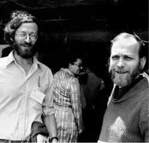

The hunt takes a different direction
At the end of the previous chapter, Sol Spiegelman's sweeping search for retroviruses in human cancers had failed. It was a serious embarrassment for scientists who had invested money and hope in the idea that a hidden infectious agent caused most tumors. But the failure was not the end of the story.
Howard Temin proposed changing the question. Instead of asking whether a particular virus lurked in every human tumor, scientists should ask which part of Rous sarcoma virus actually made a cell cancerous. A virus was a delivery system. Its most important cargo might be a specific piece of genetic information. Identifying that piece could reveal a mechanism shared by cancers produced without viruses.
This is the core shift of the chapter: from finding a cancer-causing messenger to understanding the cancer-causing message.
Rous sarcoma virus offers a manageable genetic puzzle
Rous sarcoma virus, or RSV, was a useful experimental object because its genome contained only a few genes. Searching for a malignant gene inside this small genome was much more practical than searching among the thousands of genes inside a human cell.
In the 1970s, researchers including Steve Martin, Peter Vogt, and Peter Duesberg studied altered versions of RSV. Some mutant viruses could still replicate, but could no longer produce the characteristic cancer-like transformation of cells.
That distinction was revealing. The missing function was not essential for the virus simply to reproduce. It was specifically important for converting ordinary cells into malignant ones.
By comparing viruses that retained tumor-causing ability with those that lost it, researchers narrowed the effect to one gene: src, pronounced like “sarc,” derived from sarcoma.
What is an oncogene?
Scientists used the term oncogene for a gene capable of driving cancerous transformation. In RSV, the src gene was responsible for many of the changes that made infected cells grow uncontrollably.
Think of a music player with several buttons. Some buttons control volume, others choose songs, and one starts the music. Scientists remove or damage different buttons and observe what stops working. When disabling one particular button eliminates the malignant effect while leaving other viral functions intact, they have found a critical control.
This kind of experiment helps establish cause, not merely association. Src was more than a gene found near cancer; its activity was necessary for the viral cancer-producing behavior in that model.
Discovering what src does inside the cell
Finding the gene created a second question: How does src change cell behavior? In the 1970s, Ray Erikson, working with Mark Collett and Joan Brugge, examined the protein produced by src.
They found that the protein added phosphate groups to other proteins. This process is called phosphorylation. Enzymes that perform such reactions are called kinases.
The chemistry may sound complicated, but its biological purpose is often straightforward. Adding a phosphate group can change a protein's shape, activity, partners, or location, allowing cells to communicate and regulate what happens next.
Some kinases participate in signaling pathways that tell a cell when to grow, move, or divide. They are components of the control system that keeps normal tissues functioning.
The molecular switch analogy
Imagine an office building with electric switches. A signal reaches the control room, and someone switches on the lights in one part of the building. That action can trigger another system, which activates yet another. The result is a coordinated response.
Cells behave similarly. A signal activates a protein, which activates other proteins in sequence. The response may eventually reach the machinery controlling cell division.
In normal cells, the switches are tightly regulated. When the signal has done its job, the pathway is turned off or reduced.
The viral Src protein behaved abnormally: its kinase activity was excessive and difficult to shut down. The result was like a switch stuck permanently in the “on” position. It could continue activating signals that encouraged division even when no appropriate growth instruction was present.
Why kinase overactivity matters for cancer
Cell division is useful when tissues are growing or repairing themselves. But uncontrolled division is dangerous. If a signaling pathway keeps urging the cell to divide, the cell may ignore the usual boundaries on growth.
The important insight was that cancer did not require a completely alien kind of cell machinery. A familiar biological process could become malignant because its regulation was broken.
A kinase is not inherently evil. Kinases are necessary in healthy cells. What matters is whether the right signal occurs at the right time, with the right strength, and stops when appropriate.
The viral src gene was dangerous because it encoded a version of a normal type of regulatory protein behaving as though the command to divide never ended.

Another puzzle: Where did this powerful gene come from?
Researchers understood more about how src functioned, but Temin remained interested in its evolutionary origin. How had a virus acquired a gene able to manipulate such fundamental cellular processes?
Had the virus invented it? Had it assembled it from unrelated pieces? Or had it somehow borrowed the gene from the cells it infected?
This last possibility was extraordinary because it reversed the usual picture. Instead of imagining the virus as the original source of cancer-causing genes, scientists might have to investigate whether normal cells already contained close relatives of those genes.
The search moved to the University of California, San Francisco, where two scientists would make the decisive discovery.
Michael Bishop and Harold Varmus begin their search
J. Michael Bishop had trained in medicine and virology. At the time, his laboratory at UCSF was modest and crowded, far from the image of a glamorous research empire. Harold Varmus, who had studied literature before turning to medicine and virology, joined him in 1969.
Their backgrounds were unusual, but their scientific question was precise: could a normal cell's DNA contain a sequence similar to viral src?
Colleagues jokingly compared their project with Lewis Carroll's The Hunting of the Snark, a story about an elaborate expedition to capture a mysterious beast. Their version became the hunt for the sarc.
They expected, at most, to find distant genetic relatives. What they actually found overturned the central assumption.
How did they search for a gene they could not see?
The investigators used the principle that complementary DNA strands bind to one another. If a tagged DNA sequence is mixed with other DNA samples, it can attach to sufficiently similar complementary sequences. The binding can then be detected.
In simplified terms, imagine having one piece of a jigsaw puzzle and looking through a huge box for its match. If the puzzle piece is labeled, finding where it connects tells you that a related sequence exists.
The researchers prepared a probe corresponding to src and used it to investigate DNA taken from normal cells. They were not searching tumor tissue alone. They wanted to know whether healthy organisms possessed similar genetic instructions.
The astonishing result: Src was already in normal cells
Bishop, Varmus, and collaborators including Deborah Spector and Dominique Stéhelin detected src-like sequences across many species. It was not confined to infected chickens. Related sequences appeared in other birds, mammals, fish, and human cells.
This was an astonishing discovery. The precursor of a cancer-causing gene existed in the normal genome. Cells carried it before a particular virus infected them.
At first, this seems disturbing. If we carry such a gene, why are all our cells not cancerous? The answer lies in the difference between normal and abnormal versions of the gene.
Normal cellular src was controlled. Viral src behaved as a hyperactive version of that same molecular machinery.
Normal src versus viral src
Research including work by Hidesaburo Hanafusa compared the normal cellular form with the viral form. The normal Src protein had a regulated kinase activity. The viral version had changes that made its signaling persistently excessive.
| Normal cellular src | Viral cancer-causing src |
|---|---|
| Part of the cell's normal signaling equipment | Altered version carried by RSV |
| Activity can be regulated | Abnormally active |
| Supports controlled cellular responses | Can promote excessive division |
| Present in healthy organisms | Drives transformation in the viral model |
The significant distinction is not that one gene is familiar and another is foreign. It is that a normal regulatory mechanism becomes damaged or misused.

Proto-oncogenes: Normal genes that can become dangerous
Bishop and Varmus used the concept of a proto-oncogene: a normal cellular gene with a legitimate role that can become an oncogene when altered or abnormally activated.
Think of an accelerator pedal in a car. An accelerator is essential; without it, the car cannot move properly. But a pedal jammed down creates danger. The problem is not that a car has an accelerator. The problem is that its control has failed.
Similarly, cells require genes that encourage growth when growth is appropriate. A mutation or other abnormal change can make one of those genes send an excessively strong or persistent growth signal.
This helped explain how cancers could arise from various causes. Radiation and chemical carcinogens might act by altering ordinary genes already present inside cells.
Why this connected earlier theories
Return to the puzzle from the preceding chapters. Rous showed that a virus could cause cancer. Epidemiologists identified carcinogenic chemicals. Boveri suspected internal genetic disturbances.
The proto-oncogene theory brought the observations together. An outside influence can cause a change within the cell's genetic control system. A virus may carry or activate a growth-promoting gene. A chemical may damage DNA and change that gene. An error during cell division can also change it without an obvious external exposure.
These are different paths, but they may converge on the same underlying problem: faulty cellular regulation caused by genetic alterations.
This does not imply that every tumor follows an identical sequence or that cancer has only one gene responsible. The significance is the existence of a common kind of mechanism, not a universal single mutation.
The virus may have been a courier, not the inventor
The researchers developed an evolutionary explanation. Retroviruses can move genetic material between their own genomes and host-cell genomes. In certain circumstances, a virus may acquire a cellular gene and carry it elsewhere. If that gene becomes activated or altered, it can contribute to malignant transformation.
Thus the src gene responsible for RSV's tumor-producing power was not necessarily invented by the virus. It had a cellular ancestry.
The discovery turned the historical narrative around. Scientists had started with the assumption that cancer genes arrived as invaders. The experiment suggested that important precursors of those genes were already embedded in the normal organism.
Recognition and the deeper irony of the discovery
In 1989, Harold Varmus and J. Michael Bishop received the Nobel Prize for discovering the cellular origins of retroviral oncogenes. Their work helped establish a foundation for molecular cancer genetics.
Mukherjee emphasizes the literary irony behind the “hunt for the sarc.” The monster the scientists sought was not entirely foreign. It was connected to the hunters themselves. This is the meaning of the larger Part Five title: cancer is a distorted version of normal cellular life.
Understanding cancer therefore requires understanding the genes we need in order to live, grow, and repair our bodies. Cancer often takes those ordinary functions and pushes them beyond their boundaries.
Final takeaway: Cancer begins with corrupted instructions
The chapter's main sequence is: identify src in Rous virus → discover Src kinase activity → search for the gene's origin → find a related gene in normal cells → distinguish regulated cellular Src from hyperactive viral Src → develop the proto-oncogene theory.
The lesson extends beyond viruses. It explains how harmful exposures and internal mutations can converge on cellular growth-control genes. The next challenge is to show these principles in actual human cancers, not only in viruses and experimental cell cultures.
Most important message: Cancer is dangerous in part because it borrows the body's own machinery. A medicine that tries to stop cancer must therefore distinguish normal, necessary growth signals from their abnormal, uncontrolled forms.